a card for a dinosaur park
China Dinosaur Park Visual Identity Manual
Brand visual identity manual, 61 pages
Visual Design
Brand System
Skills
InDesignIllustrator
Type
Typeface DesignLogo DesignBrand DesignLayout Design
61 pages · scroll down ↓
This specification manual contains basic branding principles and use cases, maintaining the visual identity system through the core logo, brand colours, graphic design and image layout style. It presents every key visual element of the brand and sets out systematically how to use them correctly and consistently across applications and materials.
Built in 2000, China Dinosaur Park is a one-stop tourist resort in Changzhou. The mark takes the silhouette of a stegosaurus and folds in the abbreviation “cz” for Changzhou; because the audience is mainly young people and children, it uses the livelier three primary colours and rounded shapes.
Built in 2000, China Dinosaur Park is a one-stop tourist resort in Changzhou. The mark takes the silhouette of a stegosaurus and folds in the abbreviation “cz” for Changzhou; because the audience is mainly young people and children, it uses the livelier three primary colours and rounded shapes.
03
The system, page by page
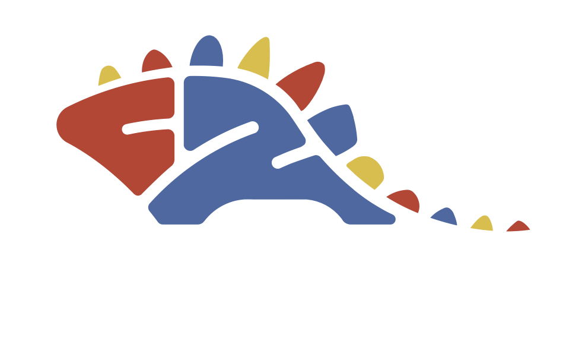
A2.1 Creative description
The mark takes the silhouette of a stegosaurus and folds in the abbreviation “cz” for Changzhou. Because the brand speaks mainly to young people and children, it uses the three primary colours and rounded shapes to set the park apart from other resorts.
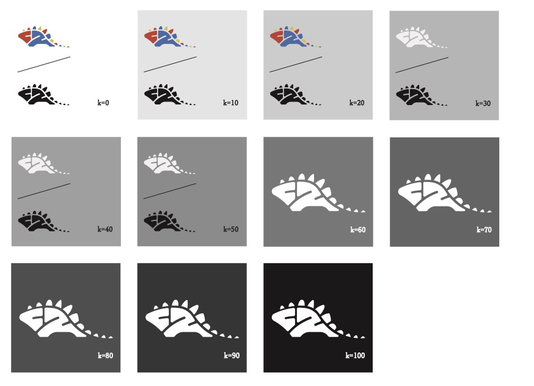
A3.4 Logo brightness usage
Placement across a K0–K100 tint ladder. Above K50 the full-colour mark holds; below it the mark reverses to white so the silhouette stays the most prominent element on the surface.
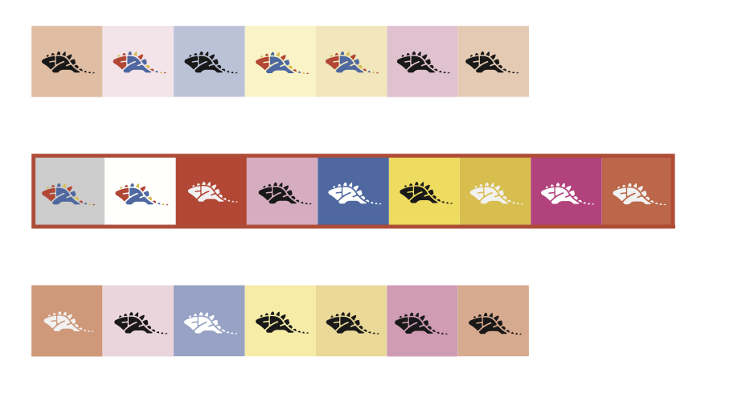
A3.5 Logo background usage
Approved and unapproved background colours. The bordered row shows the permitted brand and neutral grounds; the rows above and below are combinations to avoid, where contrast drops too far.
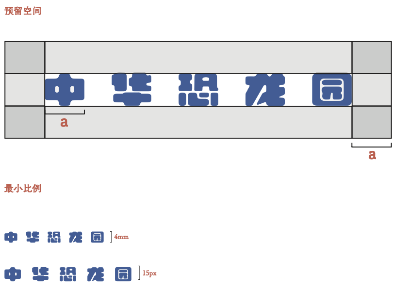
A4.1 Chinese wordmark — clear space & minimum size
Clear space equals the height a on all four sides, and nothing may enter it. The Chinese wordmark is never reproduced below 4 mm in print or 15 px on screen.
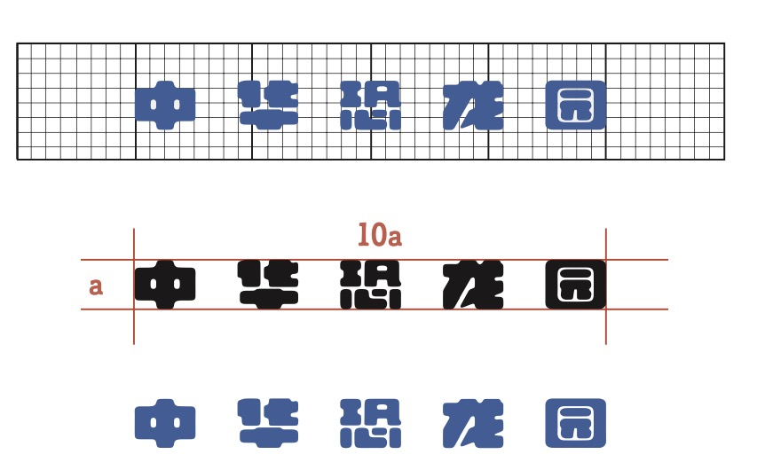
A4.2 Chinese wordmark — grid construction
The wordmark is drawn on a square grid and measures 10a wide by a tall. It has been specially drawn and may not be modified in any way; reproduce it from the supplied master files.
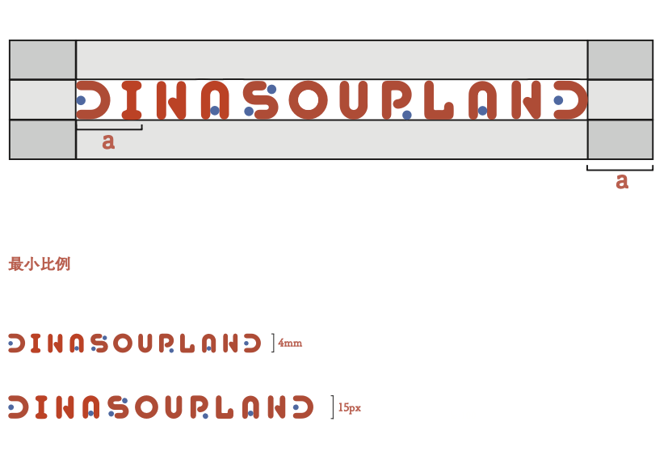
A4.3 English wordmark — clear space & minimum size
The same clear-space rule of a applies to DINASOURLAND. Minimum reproduction is 4 mm in print and 15 px on screen.
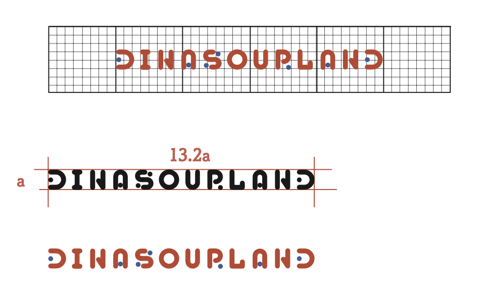
A4.4 English wordmark — grid construction
DINASOURLAND measures 13.2a wide by a tall on the same grid. The blue counters inside the letters are part of the drawing and are not optional.
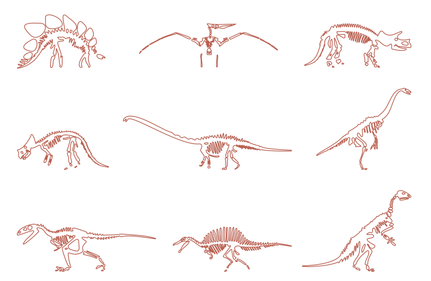
A5.1 Auxiliary graphics — basic elements
Nine single-line dinosaur skeletons form the auxiliary graphic set, drawn in one continuous weight so they read at both signage and print scale.
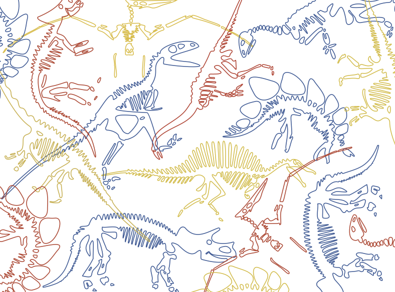
A5.2 Auxiliary graphics — extended pattern
The skeletons overlap in the three primary colours to build a repeating excavation-site pattern for large surfaces, packaging and vehicle liveries.
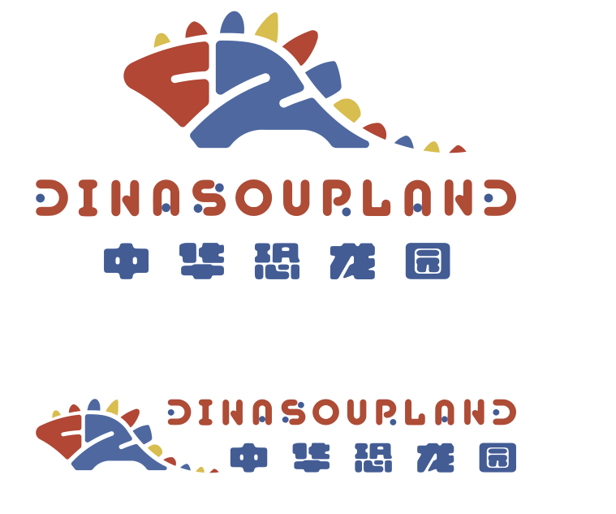
A6.1 Lock-ups — vertical and horizontal
Two approved lock-ups: mark over wordmarks for square formats, mark beside wordmarks for wide ones. No other arrangement of the three elements is permitted.
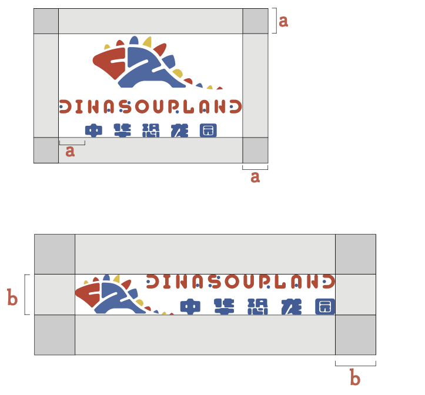
A6.2 Lock-ups — clear space & minimum size
Clear space for each lock-up, a for the vertical and b for the horizontal, measured from the outer edge of the mark. The larger the reserved area, the better.
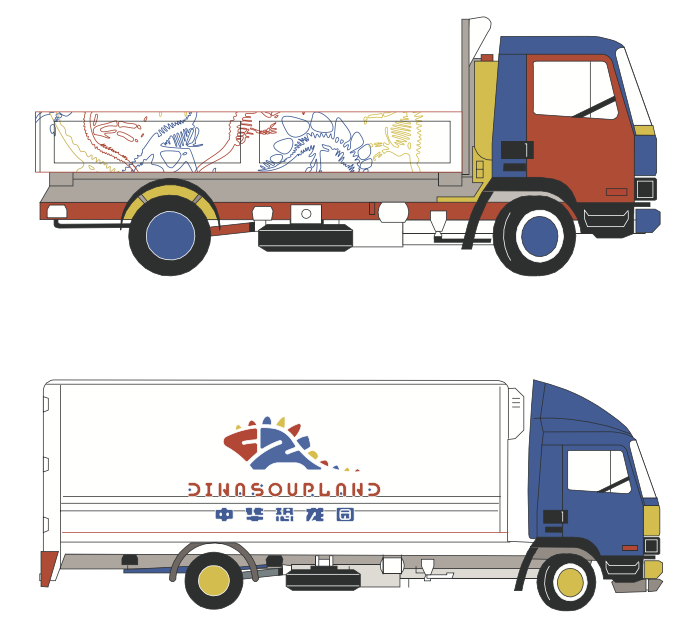
B5 Transport
Fleet livery in two treatments: the skeleton pattern as a full flank graphic on the flatbed, and the horizontal lock-up centred on the plain white box truck.
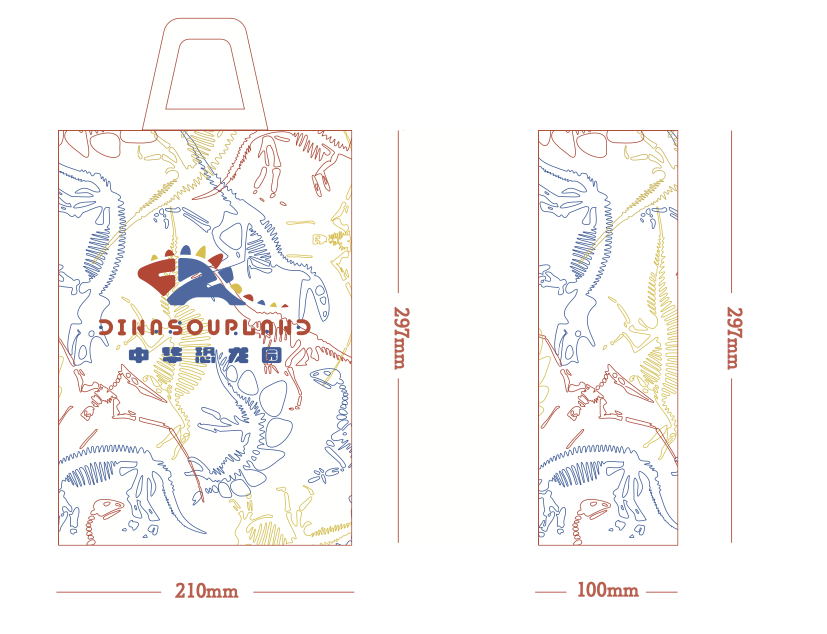
B6.1 Carrier bag
210 × 297 mm carrier bag. The skeleton pattern runs full-bleed in a lighter tint so the lock-up stays the focal point at the centre of the face.
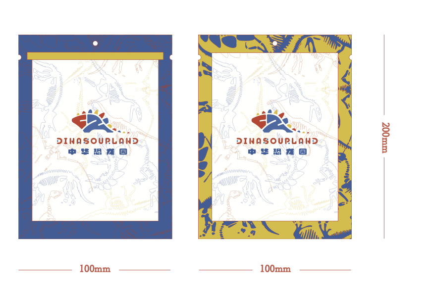
B6.2 Merchandise gift bag
100 × 200 mm gift pouch in two colourways, blue and yellow. The pattern moves to the frame and the centre panel stays light to keep the lock-up legible.